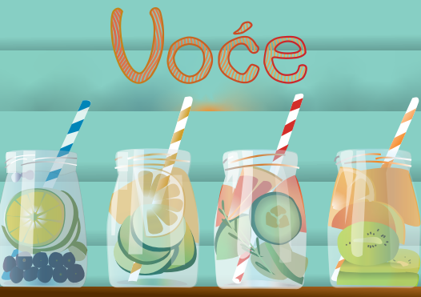

Adobe Premiere
-
Vježba 8: moj cinemagraf kreiran pomoću Adobe Premierea

Fontforge
Vježba 1: moj font kreiran pomoću Fontforgea
Adobe Illustrator
Vježba 2: inicijali s Bazierovom krivuljom kreirani u Adobe Illustratoru
Vježba 3: slika zvijezda kreirana pomoću rotacija i translacija u Adobe Illustratoru
Vježba 4: slika trešanja kreirana pomoću gradacija u Adobe Illustratoru
Projektni zadatak 1: voće nacrtano u Adobe Illustratoru
Adobe Photoshop
Vježba 5: retuširanje lica uz pomoć Adobe Photoshopa
Vježba 6: koloriziranje fotografije uz pomoć Adobe Photoshopa
Vježba 7: fotomontaža pomoću alata Adobe Photoshop
Projektni zadatak 2: retuširanje, kolorizacija i fotomontaža pomoću alata Adobe Photoshop
Adobe Premiere
Vježba 8: moj cinemagraf kreiran pomoću Adobe Premierea